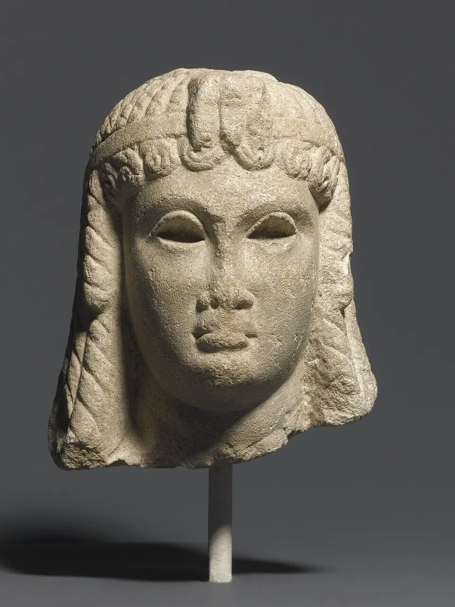
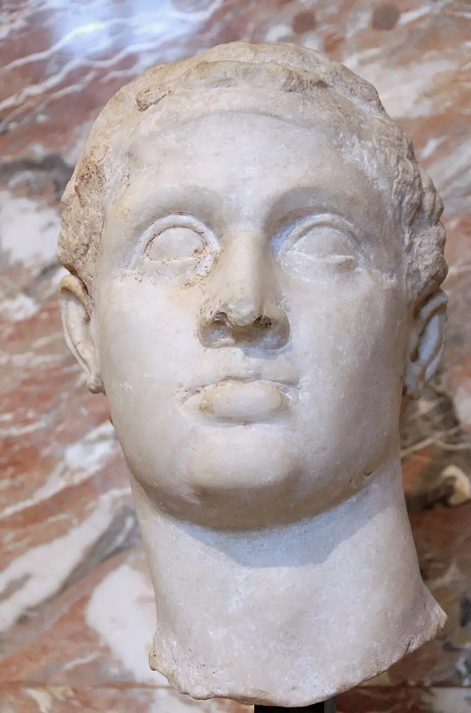
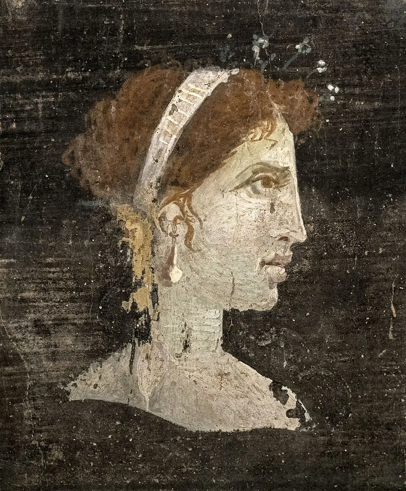

Cleopatra gần thời con người lên Mặt Trăng hơn là thời xây Kim tự tháp
Khi Cleopatra chào đời năm 69 TCN, Đại Kim tự tháp đã đứng đó khoảng 2.500 năm. Từ Cleopatra đến lúc Apollo 11 đáp xuống Mặt Trăng chỉ khoảng 2.040 năm.

Khoảng giữa năm 60 và 56 TCN, sử gia Hy Lạp Diodorus Siculus đến Ai Cập và ghi chép về Kim tự tháp của vua Khufu. Ông viết rằng lớp đá ốp bên ngoài vẫn còn rất tốt, và ước tính phải cần tới 360.000 người để xây nó. Cùng thời điểm ấy, ở Alexandria, công chúa Cleopatra mới khoảng mười tuổi. Với Diodorus và với cô bé ấy, Kim tự tháp đã là một di tích cổ hơn cả khoảng cách từ chúng ta ngày nay về thời của họ.
Phép tính
Đại Kim tự tháp Giza là lăng mộ của pharaoh Khufu, thuộc Vương triều thứ tư. Theo niên đại được dùng phổ biến, nó được xây khoảng năm 2600 TCN, trong khoảng 26 năm. Với chiều cao ban đầu 146,6 m, nó là công trình nhân tạo cao nhất thế giới trong hơn 3.700 năm.
Cleopatra VII sinh đầu năm 69 TCN. Như vậy bà ra đời khoảng 2.500 năm sau khi Kim tự tháp được xây. Apollo 11 đáp xuống Mặt Trăng ngày 20/7/1969, tức khoảng 2.040 năm sau khi Cleopatra sinh. Niên đại Kim tự tháp có sai số, nhưng dù xê dịch vài chục năm, khoảng cách từ Kim tự tháp đến Cleopatra vẫn dài hơn khoảng cách từ Cleopatra đến Apollo 11 chừng năm thế kỷ.
Kim tự tháp trong mắt người Hy Lạp


Herodotus viết về Kim tự tháp vào khoảng năm 450 TCN, hơn 2.000 năm sau khi nó được dựng. Ông nghe kể rằng 100.000 người làm theo ca ba tháng một, suốt 20 năm. Ông cũng xếp nhầm Khufu vào sau thời các vua Ramesses, sai hơn một nghìn năm. Herodotus còn kể về một dòng chữ bên ngoài Kim tự tháp ghi số củ cải, tỏi và hành mà thợ đã ăn. Wikipedia nhận xét rằng có lẽ người phiên dịch của ông không đọc được chữ tượng hình, hoặc cố ý kể sai.
Strabo, một nhà địa lý Hy Lạp khác, đến Ai Cập khoảng năm 25 TCN, ngay sau khi nơi này thành tỉnh của La Mã. Ông ghi rằng ở lưng chừng một mặt Kim tự tháp có một hòn đá có thể nhấc ra, mở vào một lối đi xiên xuống mộ.
Một nữ hoàng nói tiếng Hy Lạp


Cleopatra thuộc nhà Ptolemy. Người lập dòng họ là Ptolemy I, một tướng Macedonia và bạn đồng hành của Alexander Đại đế. Sau khi Alexander chết năm 323 TCN, ông làm tổng trấn Ai Cập, rồi năm 305 TCN tự xưng pharaoh. Các vua nhà Ptolemy được thầy tế thần Ptah làm lễ đăng quang ở Memphis, nhưng sống ở Alexandria, một thành phố chủ yếu nói tiếng Hy Lạp, và không chịu học tiếng Ai Cập.
Tiếng mẹ đẻ của Cleopatra là tiếng Hy Lạp Koine. Bà là người đầu tiên trong dòng họ được biết là đã học tiếng Ai Cập. Theo những gì Plutarch ngụ ý, bà còn nói được tiếng Ethiopia, tiếng Hebrew hoặc Aramaic, tiếng Ả Rập, tiếng Media, tiếng Parthia, và có lẽ cả tiếng Latin.
Cassius Dio chép rằng trên tay bà có những vết châm nhỏ, và không ai biết chắc nguyên nhân.
Sử sách chép gì về cái chết của bà
Cleopatra mất ngày 10 hoặc 12/8/30 TCN ở Alexandria, khi 39 tuổi, sau khi Octavian đánh bại bà và Mark Antony. Hình ảnh con rắn mào cắn bà rất nổi tiếng, nhưng các nguồn cổ không chắc chắn. Strabo, người viết sớm nhất, cho rằng bà chết vì rắn cắn hoặc vì một loại thuốc mỡ có độc. Plutarch kể chuyện con rắn được giấu trong giỏ sung, nhưng cũng nêu khả năng bà dùng một vật nhọn như cây trâm cài tóc để đưa chất độc vào da. Cassius Dio chép rằng trên tay bà có những vết châm nhỏ, và không ai biết chắc nguyên nhân. Ông thầy thuốc riêng của bà, Olympos, được Plutarch dẫn lại, không nhắc đến con rắn nào.
Sử gia Roller lưu ý rằng không nguồn cổ nào giải thích làm sao một con rắn hổ mang Ai Cập cỡ lớn được mang lọt vào phòng và cắn đúng như ý. Trong lễ diễu binh chiến thắng ở Rome năm 29 TCN, Octavian cho rước một hình nộm Cleopatra có rắn bám vào người.
Một chữ ký trên giấy quấn xác ướp
Một tờ giấy cói, nay gọi là Papyrus Bingen 45, được nhận ngày 23/2/33 TCN, về sau bị dùng để quấn xác ướp. Đó là một sắc lệnh miễn thuế cho một người La Mã, có thể là Publius Canidius Crassus, người thân tín của Antony. Ở cuối tờ có một chữ Hy Lạp viết bằng nét khác: ginesthoi, nghĩa là "hãy làm đi" hoặc "cứ thế". Theo thông lệ nhà Ptolemy, vua phải ký duyệt văn bản để chống giả mạo, nên nhiều người cho rằng đây có thể là nét chữ của chính Cleopatra.
Sau cái chết của Cleopatra và của con trai bà là Caesarion, Ai Cập trở thành một tỉnh của La Mã. Lăng mộ của bà đến nay vẫn chưa được tìm thấy. Bà là người cuối cùng của một dòng vua mà khi bà ra đời, công trình nổi tiếng nhất trên đất nước bà đã là chuyện của 25 thế kỷ trước.